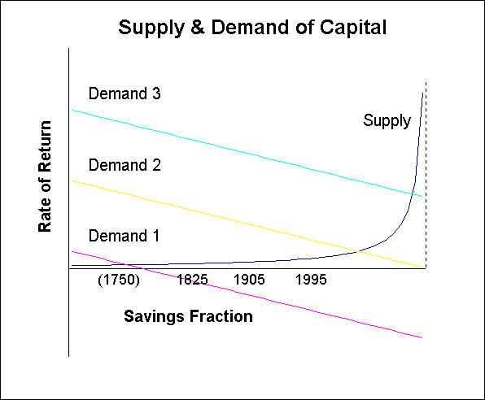

Abstract
Economic growth is determined by the supply and demand of investment capital; technology determines the demand for capital, while human nature determines the supply. The supply curve has two distinct parts, giving the world economy two distinct modes. In the familiar slow growth mode, rates of return are limited by human discount rates. In the fast growth mode, investment is limited by the world’s wealth. Historical trends suggest that we may transition to the fast mode in roughly another century and a half.
Can some new technology switch us to the fast mode more quickly than this? Perhaps, but such a technology must greatly raise the rate of return for the world’s expected worst investment project. It must thus be very broadly applicable, improving almost all forms of capital and investment. Furthermore, investment externalities must remain within certain limits.
Introduction
Many technological enthusiasts, impressed by the potential of various envisioned technologies, have speculated that technology may soon become so productive as to induce a “singularity”, a period of extremely rapid growth. (A collection of speculations can be found here and here.)
How rapid? Over the last few centuries, population has doubled roughly every 70 years, per-capita consumption has doubled roughly every 35 years,and scientific progress has doubled roughly every 15 years. In contrast, computing power1 has doubled roughly every two years for the last half-century. Many have speculated that perhaps economic growth rates will soon match or even greatly exceed current computing-power growth rates.
1 Editor’s note: It links to (Moravec 1998).
What would it take, exactly, for a technology to make the economy grow this fast? This paper offers a simple economic analysis intended to illuminate this question. We will find that while very rapid growth is possible in principle, this requires enabling technologies to meet some strong conditions. It is hard to see how any single new technology could do this, though historical trends suggest that the accumulation of all new technologies over the century and a half might.
The supply and demand of investment capital
Growth in consumption over any extended period requires growth in what economists call “capital”, which means any thing which helps make “products” people want. These terms are considered abstractly, so a music concert is a “product”, and the skills of a musician are “human capital”.
Capital can be used not only to make products, but also to make more capital, and the rate at which this happens is called a “rate of return”. The fraction of capital devoted to making more capital is called the “savings rate”, and the price people pay to rent capital for this purpose is called a “market rate of return.” This is a “real rate of return” if capital is calibrated so that one more unit of capital always produces the same “amount” (or “value” or “utility”) of products people like.
What determines how much people save and the interest rate they get for it? Supply and demand, naturally. Technology supplies a pool of investment projects which are physically possible, and investors demand these projects more or less depending on how productive they are. Or, looking at it in terms of investment capital, investment projects demand capital to be carried out, and investors supply capital to such projects. This view is illustrated in the following figure.

As is usual in supply and demand graphs, the x-axis is a quantity axis, here amount of capital, and the y-axis is a price axis, here a rate of return. The origin where the axes meet has no capital saved and a zero rate of return.
Supply curves slope up, so that higher returns are required to induce investors to save larger fractions of their income. Demand lines slope down, so that the more projects are undertaken, the worse their return. Projects can be thought of as lined up in order along the savings axis, with the best projects at the left and the worst projects at the right. At the point where supply and demand meet, the marginal investor is just barely willing to offer capital to get the market return offered by the marginal project.
While the demand lines shown are fictitious, the shape of the supply curve shown is true to a reasonable understanding of what investment supply looks like. This is based both on observing current human preferences, and on an understanding of what sort of preferences should have been selected for during our evolution. Moreover, the dates on the figure show roughly where the economy has been along this curve. (See the technical appendix for details.)
The supply curve eventually turns up sharply, shooting off to infinity at a particular bound. At least it does this if the population growth rate stays below twice its current value, and if investments on net benefit rather than harm non-investors (again, see the appendix). The supply curve is relatively flat, however, over a large range, at a rate of return determined mainly by the population growth rate and the degree to which our genes have taught us to discount risk and time. Since capital supply should be relatively insensitive to technology, we can hold this curve fixed in our minds as we consider how technology might change the demand for capital, i.e., the supply of investment projects.
When poor technology creates a low demand for investment capital, as with Demand 1 in the figure, the resulting market rate of return is not very sensitive to demand. In this case improving technology mainly just raises the savings rate. Demand 2 in the figure describes an economy nearing the middle of a transition between the two distinct economic modes, which may describe our world economy in roughly a century.
When technology is good enough to create a high demand for investment capital, as with Demand 3, savings becomes insensitive to demand, and the market rate of return can become sensitive to technology. In the high demand mode, growth rates can in principle be very high. Given demand curves with the right shape, growth rates might increase much faster with time in the high growth mode than they did in the low growth mode. Such rapidly increasing growth rates seems most like the imagined singularity scenarios. With other demand shapes, however, fast growth rates might increase more slowly than slow growth rates did.
Burning Up Excess Return in Investment Races
The reader may have noticed that the figure above suggests that while in the low demand mode the market rate of return stays roughly constant, the average rate of return of the projects actually tried might depend dramatically on the demand. After all, the top of the demand curve could in principle be very far above the low supply curve. So why couldn’t growth rates also be very large in the low demand mode?
The problem with this argument is that this figure has neglected to include the time dimension, and a lack of long-term property rights in most investment projects means that returns above the market rate are burned up an a race to be first.
There are, in fact, very few long-term property rights regarding the right to undertake investment projects. Think of developing a new kind of car, colonizing the moon, developing specialized CAD software, or making a movie with a certain kind of gimmick. Each such project requires various forms of capital, such as machines or skilled labor. While in the short term only one investor may have the rights to tackle a given project, in the long term many competing investors could have positioned themselves to have this short-term opportunity.
For example, Microsoft’s dominant position in PC operating systems now gives it the right to many very attractive investments. But there was once an open race to become the dominant operating system, and competitors then tried harder because of the prospect of later high returns. And when deciding whether to enter this earlier race and how hard to try, investors mainly wondered if they could get a competitive rate of return. Similarly, while one group now has the right to make the next Batman movie sequel, there have long been open contests to create popular movie series, and popular comic strips.
Consider a typical as-yet-untried investment project, becoming more and more attractive with time as technology improves and the world market grows larger. If there wasn’t much point in attempting such a project very long after other teams tried, then a race to be first should make sure the project is attempted near when investors first expect such attempts to produce a competitive rate of return. This should happen even if the project returns would be much greater if everyone waited longer. The extra value the project would have if everyone waited is burned up in the race to do it first.
Thus most of the return above the market return in our supply and demand figure above should be burned up, leaving the average return at about the market return. Thus in the low demand mode the height of the demand curve is relatively unimportant. If anticipated, a technology which makes a moderate number of investment projects much more productive may have no effect on growth rates or on rates of return.
The width of the demand curve, however, does matter in low demand mode. If technology creates many new attractive investment projects, growth rates can rise due to a rise in the savings rate. This happens by changing the rate of return offered on the marginal investment project, the project actually tried which is expected to offer the worst return. To improve the marginal project, a technology needs to have a very broad range of productive applications.
Investment Bottlenecks
A big problem with having a very broad range of applications, however, is the possibility of bottleneck resources. Most production, for consumption or investment, requires a wide variety of forms of capital. These include land, raw materials, energy, various sorts specialized labor and specialized machines, information sources, places to dispose of waste, access to channels of distribution and advertising, legal adjudication, and regulatory approval. A technology that dramatically improves the productivity of one of these typically gives only a small improvement to the final output. This is the concept of diminishing returns in production. If the rate of improvement in any one input consistently lags behind the rest, that input then becomes a bottleneck limiting the growth rate for the entire process.
For example, computer hardware may be getting cheap very fast, but one cannot now as quickly reduce the costs of training professionals who understand both computers and application areas well. Thus such training becomes a bottleneck limiting the contribution of computers to the larger economy. Similarly, even having the cost of producing electricity drop to near zero would only have a minor effect on the economy, at least in the short term. Most of the price consumers pay for electricity is to transport it, not to produce it, and new ways of organizing the transportation and production of electricity would have to evolve to take more advantage of the new situation.
The notion of bottlenecks applies to timescales in particular. For example, I think the rapid growth in computing speed and communication bandwidth, together with loose notions that most of the economy must be at root computation and communication, have suggested to many that most all economic timescales, including economic doubling times, must soon rise to meet these faster rates. But this ignores the prospect of other physical processes becoming time bottlenecks, and the diminishing returns to raw computation. Note also that in the low growth mode, even changing the total investment time scale by a large factor, which implies changing the capital demand function by a large factor, need not change the market return or growth rate by very much.
It seems hard to escape the conclusion that it just takes a lot of time for the world economy to absorb even very broadly applicable technologies like the computer, especially if the criteria of interest is raising the rate of return on the marginal investment project worldwide. Thus it seems unlikely that a single new technology could quickly knock the economy into a high demand mode with very high growth rates. (For similar conclusions, see here and here.)
Even if no single technology can create fast growth, the cumulative effect of all new technologies over many decades, might, still slowly push the economy up the supply curve into the high demand mode. This requires that such technologies keep creating enough productive investment opportunities to keep up with a very rapidly growing economy, that investments on average benefit non-investors, and that we don’t double population growth rates. This doesn’t seem easy, but it may not be impossible either.
Conclusion
If we assume that the risk and time preferences of future investors will not vary much from those which evolution has given us, then the supply curve for investment capital should say nearly fixed while technology changes the demand curve. And since a lack of long-term property rights in investment projects creates a race to be first, the two parts of the supply curve create two distinct modes for the economy: a low growth rate mode and a high growth rate mode. Historical trends on growth rates suggest that we are slowly moving up the capital supply curve toward the high growth mode, and may reach it in roughly a century and a half.
Many have suggested that some special new technology will induce rapid growth rates much more quickly than this. This is possible in principle, but we have identified a number of conditions which such a technology must meet. Investments must on average benefit, rather than harm, non-investors. And most difficult, the special technology must have such broad and attractive enough applications across the world economy that it dramatically raises the returns on the worst investment anyone undertakes. To do this, such a technology must dramatically improve the productivity of almost all forms of capital, not just a few. And this must be true even though, in a race to be first, each investment project is started as soon as it seemed marginally attractive.
These conditions do not appear to have been met by any of the very diverse range of technologies that have yet appeared. It is possible that such conditions may be met by some future technology, but a persuasive argument for this case should explain, in standard economic terminology, why we should expect this technology to meet these conditions.
References
Barro, R., Sala-I-Martin, X., Economic Growth, McGraw Hill, 1995.
Blume, L., Easley, D., “Evolution and Market Behavior”, Journal of Economic Theory, 58:9-40, 1992.
Hansson, I., Stuart, C., “Malthusian Selection of Preferences,” American Economic Review, 80(3):529-544, June 1990.
Maddison, A., Dynamic Forces in Capitalist Development, Oxford Univ. Press, 1991.
Price, D., Little science, big science… and beyond, Columbia Univ. Press, 1986.
See also Econ Growth Web site.
Technical Appendix
There are many more complex models of economic growth out there, but the following simple model is complex enough to embody many results relevant to singularity speculations.
This model is one of the simplest models of endogenous growth, allowing for real long-term growth within the model and implicitly including all forms of capital improvement, including research and development. The model’s main simplification is that it does not explicitly distinguish between various forms of capital and consumption, aggregating them instead to a single generic form.
First some notation, including standard values where applicable.
- \(n\) = growth rate of world population, now \(\sim 1.4\% / \rm{yr}\).
- \(g\) = growth rate of world per-capita consumption, now \(\sim 2\% / \rm{yr}\).
- \(p\) = typical discount rate, \(\sim 3\% / \rm{yr}\) (= factor of \(2\) in \(23\) years).
- \(a\) = typical risk-aversion, \(\sim 1\quad\) (\(a = -c u''/u'\) for utility \(u(c)\) of consumption rate \(c\)).
- \(r\) = real market rate of return (not the risk-less interest rate).
- \(s\) = savings, fraction of world capital making more capital.
- \(A\) = growth rate of invested capital (corrected for depreciation).
- \(i\) = internality, fraction of investment return the investor gets.
We have five primary equations using these parameters.
\[ \begin{aligned} \text{Supply of Capital:} \quad r &= p + ag \\ \text{Demand for Capital:} \quad A &= A(s) \\ \text{Capital Rental:} \quad r &= iA \\ \text{Accounting:} \quad g+n &= sA \end{aligned} \]
SUPPLY: The supply of capital for investment depends on how fast consumption is growing relative to the typical rate at which people discount the future. If people were risk-neutral, the market return would equal the typical discount rate. But for risk-adverse people who plan to consume more tomorrow than today, stuff today is worth more.
DEMAND: The demand function \(A(s)\) describes the investment projects that current technology makes possible. It says what the expected total (private and external) return on the worst project would be if a fraction \(s\) of total income were invested.
RENTAL: The rental price of capital depends on how fast a unit of capital can produce more capital, corrected for the fact that an investor may not internalize all the costs or benefits of a project. A project may, for example, create improvements in technology that others can copy.
ACCOUNTING: The total growth rate in consumption and capital depends on how productive capital is, and on what fraction of income is saved.
Some comments:
- Typical utility parameter values are predicted from evolutionary selection. When trading resources for a parent now vs. for a child a generation from now, it matters that a child shares only half a parent’s genes. And unit risk-aversion, which is log utility \(u(c) = log(c)\), is selected for, at least regarding shocks to all copies of a gene, such as the total market risk in the CAPM.
- These equations allow for different people to own different amounts of capital, and for different investment projects to have different returns and internality. This is because the supply equation is a very general implication of maximizing expected discounted utility, and the internality parameter \(i\) can be considered an average over the projects tried.
- We have neglected the probably-weak dependence of internality \(i\) on the savings rate \(s\). Having \(i<1\) says that investment projects on net benefit non-investors, while \(i>1\) says that non-investors are on net harmed.
- We’ve set the market return equal to the average return, and so are assuming no long-term property rights in projects. A projects happens at the first time its return becomes competitive. Relaxing this assumption is equivalent to reducing the internality \(i\), which then becomes more dependent on savings \(s\).
- \(A(s)\) summarizes all technical change which creates economic growth. It does not, however, describe changes in the growth rate. neralize While the return to any one not-yet-started project typically rises with time as technology improves, the best projects will be done first, so the \(A(s)\) function may rise or fall with time. \(A(s)\) also falls if the number of attractive investments did not grow as fast as the economy did.
- The growth rate \(g\) in the accounting equation is really the growth rate of capital, while the rate \(g\) in the demand equation is the growth rate of consumption. When savings \(s\) is constant, such as with demand \(A(s)\) unchanging with time, these are the same thing. We are thus assuming that the growth rate of savings \(s\) is much less than the growth rate of consumption \(g\).
- We are using depreciation-corrected parameters \(A\) and \(s\) in the above equations. To have a depreciation \(d\) appear explicitly, change to raw terms \(A_0, s_0\), where \(A_0 = A + d\) and \(s_0 = (s A+d)/A_0\). The accounting and rental equations become \(n + g = s_0 A_0 - d\) and \(r = i (A_0-d)\). For non-human capital, depreciation is typically \(\sim 5\% / \rm{yr}\).
The first four columns of the following table shows historical estimates for the annual per-capita and population growth rates \(g, n\) for four different dates from 1750 to 1995. (Warning: the per-capita growth estimate for 1750 is very crude.) Using the above model and our standard values for preference parameters \(a, p\), we then infer the next two columns, an annual rate of return \(r\) and a savings fraction \(s/i\) for each date. The return estimates seem roughly within reason.
| Year | # nations in data | Per-capita growth rate | Population growth rate | Rate of Return | Savings fraction | Total return | Savings | Raw total return | Raw savings |
| \(g\) | \(n\) | \(r\) | \(s/i\) | \(A\) | \(s\) | \(A_0\) | \(s_0\) | ||
| 1995 | 100+ | 2.0% | 1.4% | 5.0% | 68% | 10% | 34% | 15% | 56% |
| 1905 | 29 | 1.3% | 0.9% | 4.3% | 50% | 9% | 25% | 14% | 53% |
| 1825 | 7 | 0.8% | 0.5% | 3.8% | 34% | 8% | 17% | 13% | 50% |
| 1750 | 2 | 0.0% | 0.4% | 3.0% | 13% | 6% | 7% | 11% | 49% |
Somewhat arbitrarily assuming internality \(i = 50\%\), and using the standard value of depreciation \(d = 5\%\), the rest of the table gives estimates for total return and savings \(A\), \(s\), and their raw values \(A_0, s_0\). A standard estimate of \(56\%\) for current raw total savings roughly fits with the standard values that \(\sim 20\%\) of raw savings is invested in non-human capital, which gets \(\sim 1/3\) of income. Note that the savings growth rate seems to be growing at \(\sim 0.3\%/\rm{yr}\), which is much less than the per-capita growth rate, as we had assumed.
What fast growth requires
Assuming that preference parameters \(a, p\) don’t change much, what does this model say about the possibility of an economic “singularity,” that is, very large growth rates \(g\) in per-capita consumption? Such growth rates, if they persisted long, would imply vast changes in per-capita consumption in a single human generation.
The demand equation says that per-capita consumption growth \(g\) can’t get very large unless the interest rate \(r\) does, and the rental equation says that the interest rate \(r\) can’t get very large unless the total return \(A\) does. The accounting equation also says that total consumption growth n+g can’t get very large unless total return \(A\) does.
Using our equations to eliminate \(r\) and \(g\), we get a market equation, with capital demand on the left and capital supply on the right,
\[ A(s) = \frac{p-an}{i - as}. \]
For \(p < an\) and \(as < i\), this gives the functional form shown in the figure in the body of the paper. Thus the relevant savings fraction is actually \(s/i\), savings relative to internality, rather than savings relative to total income.
The limits to fast growth appear more directly in
\[ g = s \frac{p - n}{i - as}. \]
Thus the only way to allow very fast growth \(g \gg p\) is for \(s \sim i/a\) without \(n \sim p\). Thus since \(s< 1\), we require \(i < a\).
Thus an economic singularity, \(g \gg p\), requires:
\[ i < a, \quad s \sim i/a, \quad A(i/a) \gg p \]
That is, for unit (i.e., log) risk-aversion, an economic singularity requires that
- Investment projects on net benefit, rather than hurt, non-investors.
- Savings must be carefully balanced near the internality parameter.
- The return expected for the worst invested-in project becomes very large.
The bottom line is that this model does allow for an economic singularity under certain circumstances. The historical increase in the savings fraction has been roughly constant with time for the last two centuries, suggesting a near 100% savings fraction near the year 2150. Our ignorance about the internality parameter is cause for concern. Thus it is possible, though not obvious, that a continuation of historical trends will result in an economic singularity of \(g \gg p\) in roughly a century and a half.
Appendix: Peer Commentary
Nick Bostrom:7/7/98
Robin Hanson’s paper gives an analysis of the conditions for an economic singularity. In a few brief sections, important and non-obvious relations between the key concepts related to explosive economic growth are described. Everybody who is interested in “the singularity” will benefit from understanding what economic theory can say about the issue.
I have some doubt about the empirical part of the paper. Robin writes: “The historical increase in the savings fraction has been roughly constant with time for the last two centuries, suggesting a near 100% savings fraction near the year 2150.” Extrapolations of this sort are of course very precarious, and Robin does not claim otherwise. Yet, even as extrapolations go, this one seems especially problematic. The historical data determining the model parameters contains only three data points, if we bracket the one for 1750 which Robin says is “very crude”. It would be interesting to know whether there is more data available that fits the curve. And what are the error margins? How robust is the 2150 estimate to variations in the parameter values?
I’m also wondering about whether there might be an alternative explanations for the increasing savings rates. Rather than saying that people save a greater fraction of their capital because the rate of return on savings has gone up, is it possible that people save more because the risk factor has decreased? A person considering saving some of his money in 1750 might have faced a greater risk that his savings would go up in smoke due to some political upheaval, be expropriated by a monarch, or that he himself would get killed in a plague before he got a chance to harvest the payoff. Even if the average rate of return had been constant between then and now, might one not have conjectured that risk-averse individuals would be less inclined to invest under such circumstances, especially since institutions that could insure against unexpected losses were presumably less developed in those days?
An interesting question to consider is: What possible technologies would have the properties that could make for an economic singularity? My own view is that when we get both superintelligence and nanotechnology (and I think one would quickly lead to the other) then that will cause a singularity. This technological combination certainly has the extremely wide range of applicability that Robin lists as a precondition for a singularity. Whether it would benefit or harm non-investors is more difficult to predict, since the social ramifications could well be so dramatic that Robin’s economic model would no longer be valid. For example: It might not be possible to enforce property rights; preferences and living conditions might change so radically that comparisons between the amount of capital in the world before and after the singularity will no longer be meaningful; there might not even be a multitude of competing economical agents after the singularity.
Nick Bostrom
Department of Philosophy, Logic and Scientific Method
London School of Economics
Robin Hanson replies:7/7/98
— I thank Nick Bostrom for his thoughtful review.
I do not dispute Nick’s assessment that my empirical extrapolations seem “especially problematic”. I offered them mainly to give readers some sense of where we have been within the model I describe. I don’t really expect finer data to continue to support a linear relation of the savings fraction with time. Instead, I have recently been working on a simple sum of exponentials model of long term economic growth, using a data series by Brad DeLong (Estimating World GDP, One Million B.C. - Present). A rough draft is available.
Nick wonders whether “people save more because the risk factor has decreased.” This certainly makes sense, and is obviously one of many issues I left out of my simple model. It turns out that there is a long-standing puzzle in finance regarding pricing for risk; investors act as if the risks of strong downturns are much larger than they appear in the recent historical record. So you’d really need historical data on perceived risks to examine this empirically.
I agree with Nick that superintelligence and nanotechnology are technologies with potentially very wide applicability. But I’m more skeptical about how fast early breakthroughs in either field will lead to more advanced breakthroughs. I’m thus relatively confident that we would retain “a multitude of competing economical agents,” and I’m not convinced that correcting for technical change in comparing capital amounts will get much harder.
A final note: a dramatic loss in ability to enforce property rights doesn’t actually invalidate the model, though it might dramatically change some parameters.
Robin Hanson
hanson@econ.berkeley.edu http://hanson.berkeley.edu/
RWJF Health Policy Scholar, Sch. of Public Health 510-643-1884
140 Warren Hall, UC Berkeley, CA 94720-7360 FAX: 510-643-2627
Kathryn Aegis:7/7/98
Once again, Robin Hanson has found a connection between the principles of economics and the goals of transhumanism. It sparks thinking in a new direction and provides a potential avenue of practical application by an entrepreneur or investor.
A question that raised in my mind as I read Robin’s paper relates to a recent discussion with Kurt Schuler regarding future alternatives to our present day parochial monetary currencies and the explosive growth in investment that could result. Could the digital technologies (encryption, ubiquitous exchange, instant transfer) of alternative monetary regimes represent an example of the very technology that Robin references?
Kathryn Aegis, aegis@igc.apc.org
Hanson replies:8/7/98
Kathryn Aegis asks if “digital technologies … of alternative monetary regimes represent an example” of technologies which could induce explosive economic growth. My intuition would be that by themselves such technologies are far from sufficient. You might have a better case if you added in lots of new kinds of markets that such digital money might be used in. But most new markets are blocked due to regulatory reasons, not because of poor digital money. I’m not very confident of my intuitions here, however, and could be persuaded to change my mind by someone like Lawrence H. White.
Billy Brown:26/2/99
Robin Hanson paints an interesting picture of the relationships between the factors that underlie economic growth, and I certainly would not argue his conclusions on economic grounds. I would, however, suggest that his results could easily be misinterpreted when one attempts to apply them to the real world.
The problem is that in the kind of future many transhumans expect to see, economic growth is a poor proxy for human benefit. Consider, for example, the parallels between electronic computers and molecular manufacturing:
Computers have been undergoing an exponential improvement in price/performance ratios for some decades now. Enthusiasts like to point out that if cars had improved at the same rate over the last twenty years, the average vehicle would cost a few pennies, travel at supersonic speeds, and be capable of running for years without refueling. Nevertheless, as Hanson points out, the economic effects have been relatively modest. Computers have made some companies rich and others poor, and have on the whole been beneficial, but they have not turned us all into millionaires.
Now, molecular manufacturing promises to bring about the same kind of change in most manufacturing industries. This implies that most material goods will undergo a period of extremely rapid innovation, with costs collapsing as capabilities rapidly improve. Hanson’s model predicts, probably correctly, that the net effect on economic growth will again be much smaller than we expect. But there is a crucial difference: after a few decades of such progress our car really will cost only a few pennies, and so will all other manufactured goods.
What this means is that economic growth will become much less relevant as a means of measuring human prosperity, at least by our current standards. If prices for most material goods collapse while measures such as GNP show modest growth, the practical result is a vast improvement in the human condition.
Billy Brown, MCSE+I
Hanson replies: 26/2/99
While Billy Brown “would not argue [with my] conclusions on economic grounds,” he cautions against applying them to the real world because “economic growth is a poor proxy for human benefit.” Why? Currently the “economic effects” of rapidly falling computer hardware prices have been “relatively modest.” By analogy, Mr. Brown presumes that with molecular manufacturing (i.e., nanotech) the “prices for most material goods [would] collapse while measures such as GNP show[ed] modest growth.” Since “the practical result [would be] a vast improvement in the human condition,” he concludes “economic growth will become much less relevant as a means of measuring human prosperity.”
Mr. Brown, there is no such thing as a non-economic human benefit. If the participants in some social process perceive a type of benefit, economists consider that benefit type fair game for economic analysis.
Now published statistics like GNP do neglect many types of human benefit. They would not, however, fail to notice a rapid fall in the price of most material goods such as cars. Such a fall would certainly show up as rapid GDP growth. How fast would car prices fall with nanotech? That is exactly the question at issue here, isn’t it? The arguments of fast growth skeptics are not refuted by the fast growth claims of nanotech optimists, though of course skeptics might be refuted by more detailed economic analyses suggesting fast nanotech growth.
Robin Hanson, hanson@econ.berkeley.edu
Billy Brown:11/3/99
After re-reading Robin Hanson’s paper, exchanging a bit of private e-mail, and thinking about the issue, I’ve come to conclude that our disagreement is a result of one of those definition problems that always crop up when you have people from different fields debating a complex point. It seems to me that what he means by “economic growth” would by definition include any sort of human benefit, which of course invalidates my claim. What I meant by “economic growth” was something more like “the Federal government’s official GNP figures”, which is another matter entirely.
I must therefore concede that his model is not subject to the sorts of problems I suggested. Anything that has any real effect on human welfare should show up as economic growth, and I don’t see any reason to contest his conclusion about the conditions a technology must meet to cause economic growth. Whether nanotechnology can actually meet those conditions is a complex question best addressed elsewhere.
So, that reduces most of my comments to a complaint about the inaccuracy of current measurement methods, which isn’t especially relevant to the paper. That being the case, I think that it is time for me to retire from the field.
Billy Brown, MCSE+I
Hanson replies: 12/3/99
I’m happy that Mr. Brown and I were able to work out our differences via a private conversation, and I’m sorry that I didn’t take the discussion private from the very start.
Economists are well aware of the problems with government statistics. The problem is that allowing government agencies more leeway in including “squishy” harder to measure factors in their estimates also allows more opportunities for corruption in constructing estimates. Privately produced estimates can and do include squishy estimates, but their quality is limited by the fact that much less money goes into producing private estimates.
Appendix: Editor’s notes
This markdown document taken mostly verbatim from the original HTML file. I converted ASCII-math into LaTeX math, fixed typos, chased down a few dead links, etc.
The original metadata
Journal of Evolution and Technology June 1998. Vol. 2
(Received 10 April, 1998)
Robin Hanson
School of Public Health
University of California, Berkeley
Warren Hall, CA 94720-7360
net: http://hanson.berkeley.edu/
email: hanson@econ.berkeley.edu
Journal of Evolution and Technology
A peer-reviewed electronic journal publishing contemporary research into future science and philosophy.
ISSN 1541-0099